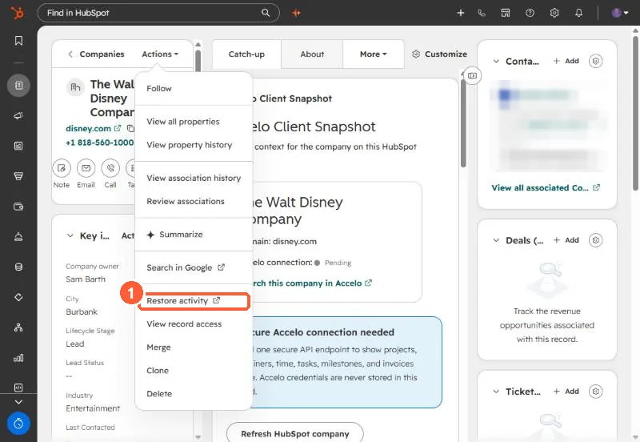

Short answer
On a record, Actions > Restore activity opens a page listing activities deleted from that record in the last 90 days, such as notes, calls, meetings and tasks. Select them, or select all, and click Restore. After 90 days they are permanently deleted. Deleted records themselves are restored from the object's Actions menu, also within 90 days.
1. Where


2. Steps
- The restore page opens in a new tab, filtered to the last 90 days.
- Select activities individually or use Select all.
- Click Restore in the upper right.
3. Other restore points
Deleted records: object index, Actions > Restore records, filterable by user or the workflow that deleted them. Deleted workflows: see restoring workflows. The audit log also restores deleted records from a Delete log entry.